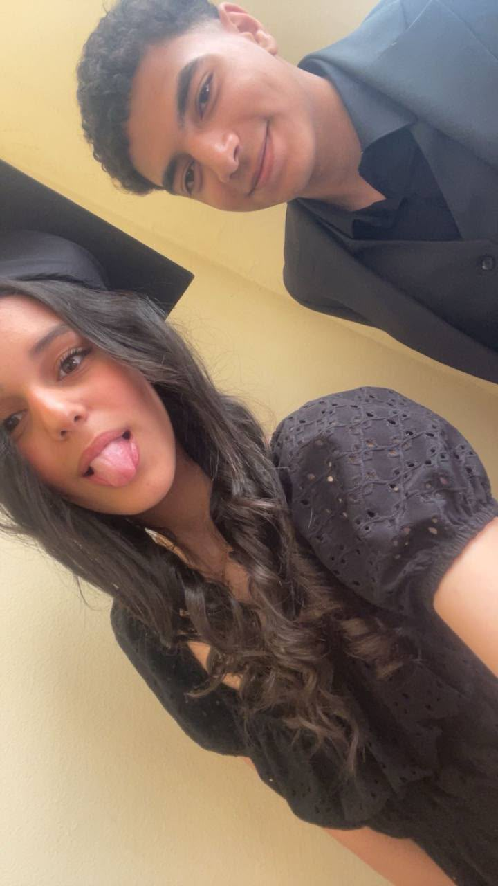

A LITTLE SOMETHING FOR YOU
For Lino 💗
14 / 10 — the day I've been waiting for.
Bgd enty omrk ma hatetkhayely ana mestany el youm da ba’aly ad eh ylina yo3tabar mn saeet ma erift en eid meladk youm 14/10 ana feelan mestany el youm da mn badry awi. W bgd mahma etkalemt aank omry ma ha’adar awsef ana bahebk ad eh w enty feelan kharagteny mn eh w wadeteny l eh. Ylina bgd bahebk awi awi bgd w feelan enty maba’etesh belnsbali wahda aadya, enty feelan ba’ety belnesbali kul haga. Ana msh aayez gherik. Sah enena aadena b doghotat kter w khawaze’ kter, I hope enha tkun stories nehkeha baaden sawa w nedhak aaleha. W rabena ykhaleky lya bgd ylina. W ana bgd asf aala kul mara daye’tk feha ylina, w omry ma ha’dar ansa kul el mawakef ely aadena beha. W aktr haga helwa hasaletly el sanady bgd huwa youm 1/7, youm lama eetarafna lbaad sah en mesh kter habeb el relationship btaeetna dy, bs ehna kdakda mesh far’lena. W tol mahna sawa omry ma hgive up fe our relationship bgd ylina. W wgodk fe hayaty bgd ghayarha 180 daraga yelina khaleteny habeb shakli habeb hayaty habeb wogody fe hayat el nas w eny ba’et atklm w ala’y hd ahkelo w afadfadlo w ashkelo hamy kulu bgd maa enk mabthkelesh ely meday’ek aalatol bs msh mohem enty kdakda hywana yaani w bgd enty sabab mn asbaby ely mkhlyany akml fe kul el hagat ely bahebaha swa’ sports sawa’ eny angah aashank sawa’ eny afarahk b ay tare’a kul da byfre’ maaya w omry ma ha’dar afahmk enty aandy eh bgd yelina w fe alot of memories eishnaha sawa w kuna mabsoten fehaaa zay lama zawaght aashank w mrs amal kabast aalaya w enena kuna bnhawl neemel el transition w kul haga dedena w lama talaateny maaki fe el guitar w mrs hala etday’et meny w khena’atna aala atfah el asbab w lama kunt wa’ef maaki w kda w la’etk mara wahda btshawry waraya w la’et reta waraya kant haga moreeba awi omoman mawkef matmanahosh l alad aada’i w lama kan kulu mfakarna metsahben mn kotr ma kuna bgd sawa w lay’en awiii aala baad kul youm bgd ghalawtk aandy btzed yelina w hoby leky byzed w bashoufk hoby leky bytgaded kul youm bgd maarafsh leh w ezayyy enty lw sahraly msh hahebk kda w bgd youm 1/7/2026 hayefdal one of my favourite dates fe hayaty w hafdal fakro tol omry aashan saeetha eetarafna bhobena bgd w kul wahed al kul ely huwa haso bgd w el donia ba’et btdhak fe weshena w khofna enena nekhsar baad bsbb en had fena byhb el tany maba’ash mawgod ba’a khof enena nekhsar baad w bgd el youm da mn saeetha wana etghayart feelan aashan msh aayez aday’k aashan ana bgd bahebk awi yelina w msh aayz aday’ek mny mn khofy eny akhsarkk bgd aw tbataly thbeny fe youm w ayam el khena’at w el shoghl bgd ana tol ma bashtaghal bafakar feky w alby bgd byt’ata3 eny msh bab’a aaref aklmk w elmobile fe geiby aashan maandesh wa’t aklmk feh bgd w omr ma khena’atna alelt mn makantk aandy yelina belaaks lama bashofk metday’a sah eny bakhaf awi enk tet’efly mny zay ma hsl saeetha bs bafrah enk habeteny bgd w en fe bany adam habeny aslun fe hayaty w i promise to be by your side tol mana aayesh yelina sawa’ bntklm aw baad el shar beedna ana kdakda hafdal ganbk aalatol tol ma ana aayesh w batnafs yhabebty i hope enena nefdal sawa tol hayatna w ganb baad w maa baad aalatol w nkoun aalatol fe hayat baad w arfen baad w neemel memories kterrr mabtekhlassh w lama tekhlas neemel gherha w gherhaa w aayzek teerafy haga ana kdakda omry ma hasebk lwahdk fe zahmet el donia ylinaa w hafdal maaki w enty teemely kul ely enty aayzah wana a’ul maalesh linetalby mabtghlatsh aslun wnhel kul mashaklna ylinaaa W bgd bahebk mn kul alby, w oxb mahma katabt w aamalt omr ma hawsef 1% mn ely gowaya ylina. Wallahi rabena ykhaleky lya bgd w lw fe haga wahda nefsy tefdal maana fa hya enena mankounsh mogarad zekra helwa fe hayat baad belaaks nefsy nefdal dayman fe hayat baad w dayman goz’ mn hayat baad mahma el donia etghayart w mahma abelna hagat w ana msh aaref el ayam el gaya hatakhodna fein w twadena fein bgd bs ana aaref en wogodk fe hayaty hayeb’a mn ahla el hagat ely hasaletly w omry ma hansa da abadan💗💗💗 HAPPY BIRTHDAY LINOOO 💗💗 I HOPE YOU SUCCESS AT YOUR LIFE SAWA’ BYA AW MNGHERI YRUHY. I’LL ALWAYS LOVE AN CHOOSE YOU FOREVER EVERRR 💗💗
HAPPY BIRTHDAY
LINOOO 💗💗
Forever ever. 💗